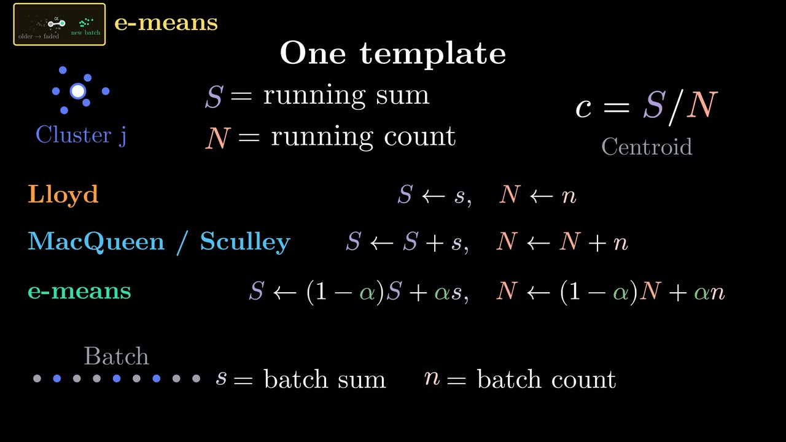

原视频 · 在线回看
点击后联网加载 B 站播放器；本地不下载整段视频。

原视频 · 在线回看
点击后联网加载 B 站播放器；本地不下载整段视频。
来源：70 年历史的 K-means 算法提速 10 倍 | e-means
UP 主：技术Flow｜时长：00:27:45｜阅读强度：deep
链接：https://www.bilibili.com/video/BV1HPWZ6FEU9/
我们有一百万条图片、文档或句子的数字表示，想找出和一个查询最相似的条目。数字表示可以看成空间中的点，相似的条目往往靠得更近。最直接的搜索要把查询和一百万个点逐一比较；查询多起来，距离计算就会反复消耗时间。假如先把这些点分成一千簇，每簇找一个代表，查询到来时就可以先比较这一千个代表，再进入最近的少数几个簇寻找结果。聚类先花了一笔计算，后面的搜索就有机会省下大量工作。
每个簇的代表叫质心，K-means 要找的就是 个这样的代表以及各个点的归属。以一千个簇里选八个为例，簇大小近似均衡时，再检查约八千个点，加上比较质心的一千次距离，合计约九千次，远少于逐一比较的一百万次。这里用的是先筛候选区域的近似检索：没有进入候选的簇会被跳过。把每个簇对应的成员名单存起来，就形成倒排文件结构。后面讨论的算法优化，最终也会重新用到这个结构。
如果我们不再保存每个点的全部坐标，只保存最近质心的编号，就能用一个小编号近似表示原来的向量。二百五十六个质心只需要一个字节的编号，但用一个质心替代整条向量会产生误差。乘积量化进一步把向量切成几片，每片分别聚类、分别保存编号。八片各一个字节，组合起来有 种可能的编码；小码本的组合能表示大量不同的向量。
同一个“用有限个代表概括连续向量”的思路，也出现在 VQ-VAE 的码本里。图片或声音先变成向量，再用码本中最近的一项替换，编号就成为后续生成模型可以处理的离散 token。另一个用途是训练数据均衡：互联网数据里有些概念出现几百万次，有些只有寥寥几次。先聚类，再在簇之间较均匀地采样，就能减少常见概念对训练集的支配。这些用途都可能面对数十亿个点和数百万个质心，聚类本身的费用因此成为关键问题。
设想空间里有五团点，我们随意放下五个初始质心。第一步，让每个点比较自己到五个质心的距离，把自己分给最近的那个。第二步，对每个簇取所有成员的平均坐标，把质心移到这个平均位置。再用新质心重新分配所有点，重新求平均，如此反复。这个交替过程就是 Lloyd 算法，也是传统 K-means 实现的基础。这里的“一遍”特指完整处理一次数据集；读完一遍才完成一次整体质心更新。
怎样判断质心放得好不好？我们计算每个点到所属质心的平方距离，再对全部点取平均。设有 个点，第 个点是 ，所属簇编号是 ，对应质心为 ，目标就是减小下面的均方误差：
Lloyd 的两步都不会增加这个目标。重新分配时，只会选择同样近或更近的质心；成员固定后，平均值恰好使这组点的平方距离和最小。因此损失一路下降，最终分配和质心会稳定下来。但稳定并不保证找到了最好的分组。五团点的例子里，两个质心可能挤在同一团，另一团却没有代表；要把一个质心挪过去，途中可能要暂时承受更大的损失。只允许下降的过程就会停在这样的局部最优。
费用也很容易算清：每个点比较 个质心，每次比较处理 个坐标，一遍的计算规模约为 。十亿个点配一百万个质心，一遍就涉及 次点与质心的距离比较，还没有把每次比较内部的维度运算展开。更麻烦的是，一遍如此昂贵的工作，只换来一次整体更新。
第一条路是让每遍更便宜。利用三角不等式，可以证明某些质心绝不可能更近，从而跳过距离计算。不过，跳过的项目因点而异，会让计算变得不规整。GPU 擅长大量相同形式的并行工作，所以另一种做法把距离比较组织为大矩阵运算，再分块计算，只保留每个点目前最近的质心，不保存巨大的完整距离表。Flash K-means 属于这类实现。在给出的单 GPU 例子里，一千万个向量、约六万五千个簇、二十五遍计算，从约两分半降到十四至二十二秒；每遍便宜了，遍数仍然存在。
第二条路是减少遍数。K-means++ 让初始质心彼此分散，减少后续收拾错误起点的工作，但经典初始化要依次选出质心，本身会增加扫描开销。另一类在线、小批次方法索性不等整遍结束，处理一个点或一小批点就更新质心。这样每遍可以更新很多次，初期损失下降很快，后期却可能停在较差的位置。原因要从质心的记忆方式看：累计平均把所有历史分配看得一样重，收到第 个点时，新点只能把质心拉动约 的距离。到第一万个点时，新分配已经几乎拉不动质心，早期错误归属却仍有影响。
把每个簇的状态拆成两项，就容易看清几种方法的区别： 保存成员向量的求和， 保存成员计数，质心是 。一批新点到来，先按当前质心分配；对其中落入某个簇的点，求出本批向量和 与本批计数 。Lloyd 在整批为全体数据时直接用 替代旧状态；累计平均一直把 加进去；e-means 则给旧状态打折，同时吸收新批次。
这里的 控制新旧记忆的比例。每经过一批，旧点的权重就再乘一次 ，更早的分配因而按指数衰减。取 时，最近一批的基础权重为 36%，前一批约为 23%，再前一批约为 15%。当计数稳定在每批接收到的点数附近，质心每次朝本批均值移动的比例也大致是 。这样，早期不准确的分配会逐渐失去影响，新数据仍有能力推动质心。e 所对应的就是这种指数移动平均。
这个公式同时更新求和与计数，使质心保持为实际数据点的加权平均。直接对损失做梯度下降也能移动质心，但大批次下可能出现过大的更新。给出的两组比较中，即使选择各自较好的设置，梯度下降的最终误差仍分别比 e-means 高 1.6% 和 0.4%；“大步可能越过整团数据”是研究者对现象的解释猜测，不能由这两个分数单独证明。把 e-means 的批次设成全体数据、 设成一，又会回到 Lloyd 更新，所以两者可以放在同一个框架下理解。
小批次可以多更新几次，但每批的成员均值更嘈杂；大批次更稳定，却减少了同样扫描预算内的更新次数。因此，批次大小和遗忘因子需要一起选择。在二十万个点、三十二维、约一千个簇的例子里，每套设置都运行五遍，再用留出的新点测误差。把结果画成曲面，会看到一条较低的谷：批次增大时，合适的步长也会增大。批次里的噪声变小，才更能信任这一批的均值。
每换一份数据就搜索整张曲面，代价可能超过聚类本身。e-means 的研究者在 DEEP 数据集上进行了约七万五千次训练，覆盖十万到一亿个点、二百五十六到约六万五千个簇，再拟合决定批次和初始步长的缩放关系。批次选择的目标是在误差不超过最优值 0.2% 的范围内尽量用大批次，以适应 GPU。百万点、一万六千簇、三遍预算的例子，得到约六万五千点一批、初始步长约 0.36，每遍约十五次更新，Lloyd 同期只有一次。这里的数值属于特定规模与预算，不能直接当成所有问题的默认参数。
这些关系在未参与拟合的数据集上，中位表现与完整搜索所得的最优设置相差不到 0.2%。但拟合对象主要是高维嵌入向量，规模很小、维度很低的问题未必适合直接套用。这项限制和省掉调参成本的优势要一起保留：关系式给出了实用起点，没有证明所有点云都共享同一套最佳设置。
一个质心可能被邻居抢走全部成员，之后再也收不到点。它仍占着一个质心名额，却不代表任何区域，这就是死簇。给出的一万六千簇例子里，不处理会有四千多个死簇；把死质心随机挪到本批点上，最终仍有约两千三百个。随机复活能把质心放回数据附近，却没有充分利用哪里最需要更多代表的信息。
e-means 每五批检查一次，把计数低于平均计数十分之一的簇重新安排。它按簇大小加权选一个供体，把供体质心复制两份，向相反方向轻微扰动，每份分一半计数；死质心接手其中一份。这样相当于把较大的簇分成两部分，让闲置名额去覆盖成员较多的区域。同一个例子里，剩余死簇降到四十七个。逐项关闭组件的比较中，取消复活对训练损失的影响接近 3%，大于取消余弦步长调度或最后收尾的影响。
完整过程从随机选出的数据点作为初始质心开始，给初始状态很小的权重，让第一批可以充分改变它。随后每批完成最近质心分配、指数状态更新，并定期复活死簇。遗忘因子沿余弦曲线逐渐降到初始值的十分之一，让前期更能移动、后期更稳定。最后再用末遍的归属点计算精确均值，可以降低训练损失；若更关心新数据，也可以额外维护一份变化更慢的质心平均，以改善测试误差。这两种收尾关注的评价对象不同。
回到两个质心挤在一团点的困境。小批次只看到全体数据的一部分，得到的均值会有波动，质心因而会在精确均值附近轻微抖动。有时这会帮助质心跨过空隙，进入原来无人代表的点团，损失暂时上升后再落到更低的位置。但这没有保证每个问题都能逃离局部最优。每种玩具问题各跑二百个随机起点时，直线五团点的卡住比例是 Lloyd 46%、e-means 0%；大小悬殊的两团为 26% 和 3.5%；在 网格上却是 43% 和 44%，e-means 并未占优。
速度优势还要落到真实执行上。两类算法的大部分时间都花在寻找最近质心，e-means 使用与 Flash K-means 同类的融合 GPU 内核，因此少扫描一遍，通常就少掉一整遍最昂贵的工作。给出的四个嵌入数据集覆盖一百万至十亿个向量，e-means 平均约用 1.4 至 2.6 遍，达到比 Flash K-means 二十五遍更低的损失；对应 GPU 时间减少约十至四十五倍，CPU 相对 Faiss 的比较约快八至十五倍。倍数有明确的对照方法和数据范围，不能脱离条件泛化。
进一步放大到一百亿个向量，逐点比较全部质心仍然太贵，于是把开头的倒排结构用在质心本身：先给质心分桶，每个点只检查较近的桶，相当于在聚类内部再用一层聚类缩小候选。给出的大规模比较中，精确分配约需七百七十九 GPU 小时，采用这种近似检索后不到二十三 GPU 小时。它同时改变了候选搜索方式，因此这组巨大降幅不能全部归给指数更新。算法的统计更新和系统的检索实现，在这里共同决定最终费用。
e-means 把每次完整扫描拆成多次仍然有效的更新，用指数衰减削弱早期错误分配的影响。批次与遗忘因子共同控制更新频率、噪声和移动幅度，死簇分裂则把有限的质心名额送回需要更多代表的区域。小批次的波动有机会帮助逃离局部最优，但具体优势要放回数据、预算、初始化和检索方式里判断。